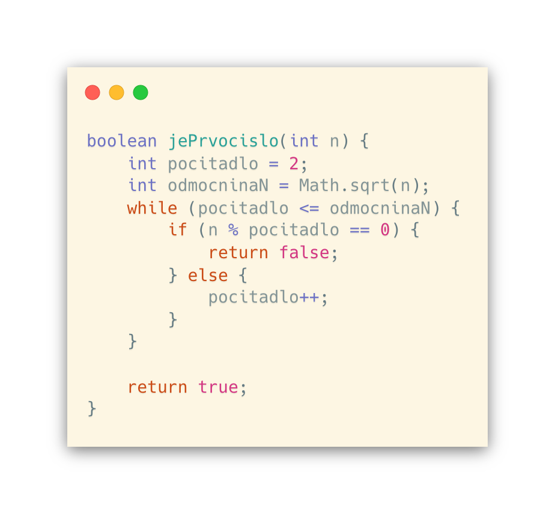
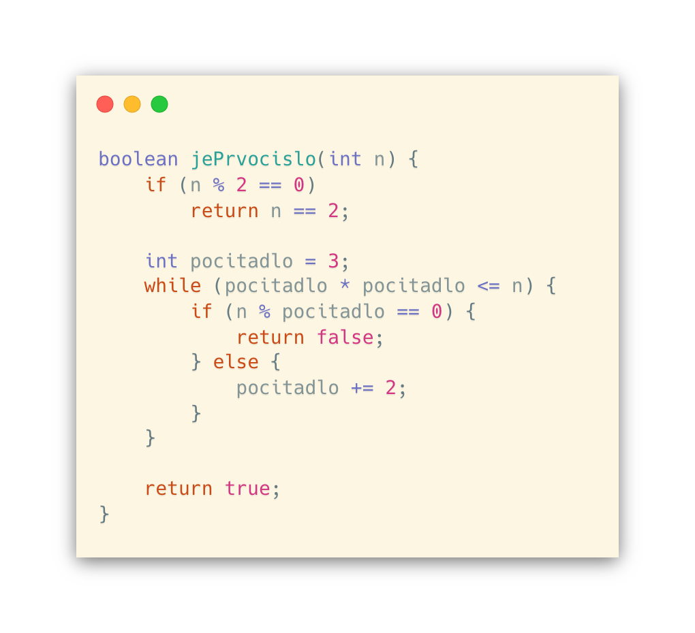

Než začneme s další kapitolou, je potřeba, abychom pochopili základní pojem, na kterém tato kapitola staví a to co je to vlastně prvočíslo.
PRVOČÍSLO je takové přirozené číslo, které je dělitelné číslem 1 nebo samo sebou.
TEST PRVOČÍSELNOSTI
Když testujeme prvočíselnost zadaného přirozeného čísla (n), jedna z možností je napsat program, který otestuje pomocí všech čísel od 2 do n-1, zda platí podmínka, že (n % testovanéČísloZRozmezí == 0). Když tato podmínka platí, je zřejmé, že zadané číslo n NENÍ prvočíslem, protože má i jiného dělitele než 1 nebo samo sebe. V tu chvíli může vrátit false. Pokud se však stane, že pro žádné z čísel podmínka platit nebude, pak lze vrátit true, neboť jsme naším programem dokázali, že vstupní číslo n prvočíslem je.
Nestačilo by rozsah zkrátit?
Odpověď je prostá, ANO.
Můžeme rozsah zkrátit například až na druhou odmocninu čísla n. Pro pochopení, proč to takto funguje si nyní ukážeme příklad. Mějme například číslo 13. Abychom zjistili, že je číslo 13 prvočíslo, nesmí se stát, abychom našli 2 přirozená čísla, jejichž součin bude 13. Tzn. nesmí platit a*b = n. Speciálním případem tohoto vzorce může být situace, kdy a i b budou stejné, pak budou tyto proměnné rovny druhé odmocnině z n. Dále z matematiky víme, že čím a i b jsou ve vztahu nepřímé úměrnosti. Aby tedy platil tento vzorec musí také platit, že čím větší je a, tím menší je b a obráceně. Když tedy budeme dělit číslo n (v tomto případě 13) většími čísli než je právě odmocnina z n, pak bude druhým činitelem desetinné číslo nebo přirozené číslo menší než odmocnina z n. Dělění většími čísli tak není nutné. Nyní tedy víme, proč dělení testujeme pouze do odmocniny z n včetně.
Takový algoritmus můžeme zapsat následovně:
Jako vždy i tento algoritmus není ještě dokonalý. Zkusme se podívat například na odmocninu, kterou počítáme. Když počítáme z nějakého čísla odmocninu, je dost pravděpodobné, že vznikne číslo s nekonečným rozvojem míst. Tzn., že číslo, které spočítme může mít jisté nepřesnosti, neboť je pouze zaokrouhlené, a zároveň je počítání odmocniny poměrně náročná operace. Z toho důvodu nahradíme podmínku while smyčky lepším zápisem: pocitadlo * pocitadlo <= n. Matematicky je takový zápis totožný s předchozím zápisem s odmocninou, ale je mnohem jednodušší na výpočet, leč ho provádíme při každé iteraci smyčky.
Dalším zjednodušením může být eliminace násobků 2, čímž odstraníme značnou část možností, konkrétně každé druhé číslo. Na začátku tak otestujeme zda číslo n není dělitelné 2. A když ano, vrátíme výsledek podmínky, zda číslo n není 2. Kdyby totiž n bylo 2, znamená to, že je n prvočíslem. V opačném případě to mohou být jiné násobky 2, což prvočísla s jistotou nejsou.
Zbytek stávajícího algoritmu se již nezmění a tak nakonec může jeho finální verze vypadat takto:
ERATOSTHENOVO SÍTO
Představme si situaci, kdy potřebujeme najít a uložit všechna prvočísla od 1 do n. V takové situaci se používá takzvané Eratosthenovo síto. V praxi ho reprezentuje pole proměnných typu boolean. Indexy pole reprezentijí přirozené číslo a hodnota na daném indexu říká, zda číslo je (true) nebo není (false) prvočíslo.
Algoritmus tak bude metoda vracící zmíněné pole booleanů. Na začátku metody ho vytvoříme o délce n + 1, abychom otestovali a zahrnuli do výsledku i samotné číslo n.